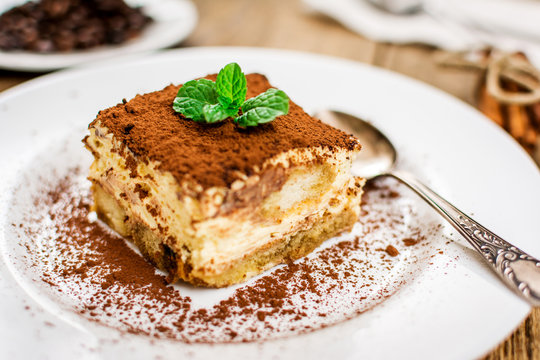
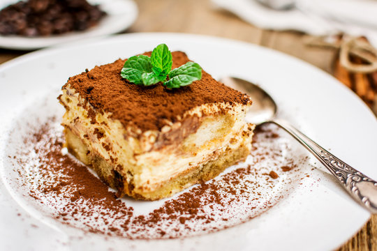

Food to me is not any abstract its an emotion. Every food has its own mood is what I believe.Eating is like
feeling the mood or vibe of that food. Exploring different kinds of food is like a emotional journey.
Your love to food is discovered when every bite elevates your taste-buds.
"EAT GOOD FEEL GOOD"
 
